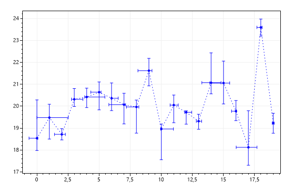
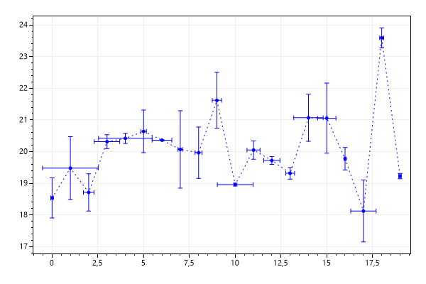
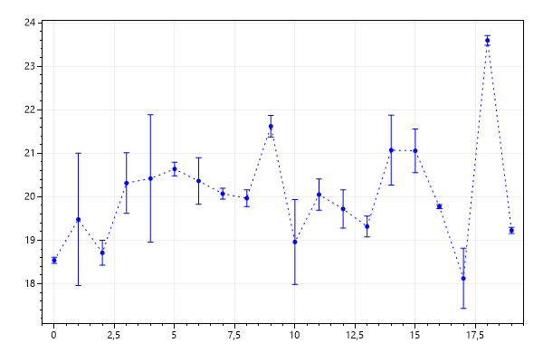
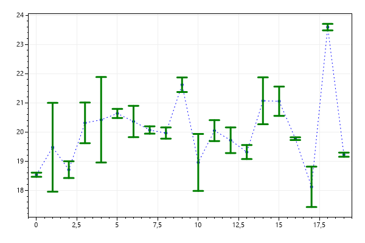
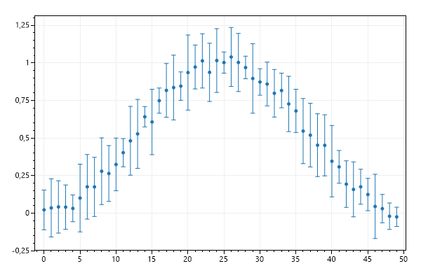

This page contains recipes for the Error Bar category.
Visit the Cookbook Home Page to view all cookbook recipes.
Visit the Cookbook Home Page to view all cookbook recipes.
Error Bar Quickstart
Error Bars allow more fine-grained control over how your error bars are shown.
var plt = new ScottPlot.Plot(600, 400);
Random rand = new Random(0);
int pointCount = 20;
double[] xs = DataGen.Consecutive(pointCount);
double[] ys = DataGen.RandomNormal(rand, pointCount, mean: 20, stdDev: 2);
double[] xErrPos = DataGen.RandomNormal(rand, pointCount).Select(e => Math.Abs(e)).ToArray();
double[] xErrNeg = DataGen.RandomNormal(rand, pointCount).Select(e => Math.Abs(e)).ToArray();
double[] yErrPos = DataGen.RandomNormal(rand, pointCount).Select(e => Math.Abs(e)).ToArray();
double[] yErrNeg = DataGen.RandomNormal(rand, pointCount).Select(e => Math.Abs(e)).ToArray();
plt.AddScatter(xs, ys, System.Drawing.Color.Blue, lineStyle: LineStyle.Dot);
plt.AddErrorBars(xs, ys, xErrPos, xErrNeg, yErrPos, yErrNeg, System.Drawing.Color.Blue);
plt.SaveFig("errorBar_quickstart.png");

Symmetric Error Bars
There's a shorthand method for error bars where the positive and negative error is the same.
var plt = new ScottPlot.Plot(600, 400);
Random rand = new Random(0);
int pointCount = 20;
double[] xs = DataGen.Consecutive(pointCount);
double[] ys = DataGen.RandomNormal(rand, pointCount, mean: 20, stdDev: 2);
double[] xErr = DataGen.RandomNormal(rand, pointCount).Select(e => Math.Abs(e)).ToArray();
double[] yErr = DataGen.RandomNormal(rand, pointCount).Select(e => Math.Abs(e)).ToArray();
plt.AddScatter(xs, ys, System.Drawing.Color.Blue, lineStyle: LineStyle.Dot);
plt.AddErrorBars(xs, ys, xErr, yErr, System.Drawing.Color.Blue);
plt.SaveFig("errorBar_symmetric.png");

Error Bars in One Dimension
If you only have error data for one dimension you can simply pass in null for the other dimension.
var plt = new ScottPlot.Plot(600, 400);
Random rand = new Random(0);
int pointCount = 20;
double[] xs = DataGen.Consecutive(pointCount);
double[] ys = DataGen.RandomNormal(rand, pointCount, mean: 20, stdDev: 2);
double[] yErr = DataGen.RandomNormal(rand, pointCount).Select(e => Math.Abs(e)).ToArray();
plt.AddScatter(xs, ys, System.Drawing.Color.Blue, lineStyle: LineStyle.Dot);
plt.AddErrorBars(xs, ys, null, yErr, System.Drawing.Color.Blue);
plt.SaveFig("errorBar_oneDimension.png");

Customization
You can customize the colour, cap size, and line width of the error bars.
var plt = new ScottPlot.Plot(600, 400);
Random rand = new Random(0);
int pointCount = 20;
double[] xs = DataGen.Consecutive(pointCount);
double[] ys = DataGen.RandomNormal(rand, pointCount, mean: 20, stdDev: 2);
double[] yErr = DataGen.RandomNormal(rand, pointCount).Select(e => Math.Abs(e)).ToArray();
plt.AddScatter(xs, ys, System.Drawing.Color.Blue, lineStyle: LineStyle.Dot);
var errorBars = plt.AddErrorBars(xs, ys, null, yErr);
errorBars.CapSize = 8;
errorBars.Color = System.Drawing.Color.Green;
errorBars.LineWidth = 3;
plt.SaveFig("errorBar_customization.png");

Error Bar Marker
An optional marker can be drawn at the center X/Y position for each error bar.
var plt = new ScottPlot.Plot(600, 400);
Random rand = new Random(0);
int pointCount = 50;
double[] xs = DataGen.Consecutive(pointCount);
double[] ys = DataGen.NoisyBellCurve(rand, pointCount);
double[] yErr = DataGen.Random(rand, pointCount, multiplier: .2, offset: .05);
plt.AddErrorBars(xs, ys, null, yErr, markerSize: 5);
plt.SaveFig("errorBar_marker.png");
